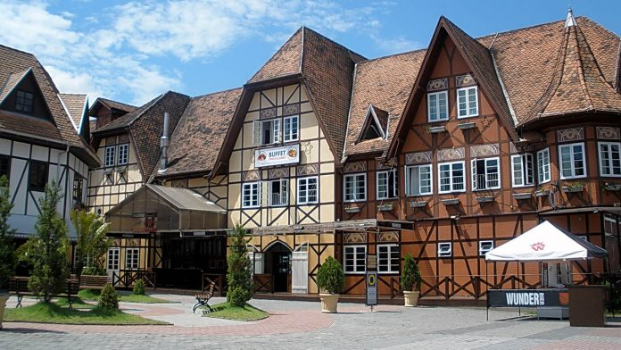

Blumenau é um município do estado de Santa Catarina, Região Sul do Brasil. Localiza-se na microrregião homônima e na Mesorregião do Vale do Itajaí. É a cidade-sede da Região Metropolitana do Vale do Itajaí. É o terceiro município mais populoso do estado, o 8º da Região Sul do Brasil, o 78º do Brasil e a única cidade média-grande de Santa Catarina, constituindo um de seus principais polos industriais, tecnológicos e universitários.
Foi fundada pelo químico e farmacêutico alemão Hermann Bruno Otto Blumenau,[5] que chegou em um barco via rio Itajaí-Açu acompanhado de outros dezessete colonos compatriotas. Este desembarcou à foz do ribeirão Garcia em 2 de setembro de 1850 e dividiu a gleba em lotes para que os colonos pudessem edificar suas moradias, majoritariamente casas feitas com a técnica enxaimel. O intervalo ocupado entre as fozes dos ribeirões Velha e Garcia definiu o atual centro da cidade.
 A melhor cidadade de SANTA CATARINAFamosa pela Oktoberfest e pela cultura alemã, Blumenau pode ser considerada como um pedaço da Alemanha localizado no Vale do Itajaí, em Santa Catarina.

Blumenau fica no estado de Santa Catarina, a 65 km do Balneário Camboriú. Não há aeroporto na cidade, sendo que o mais próximo, fica em Navegantes, a 55 km de distância. Outros aeroporto um pouco mais distante é o de Florianópolis, a 150 km. Para ir do aeroporto de Navegantes a Blumenau há um serviço de ônibus chamado de transporte executivo. O custo é de cerca de R$ 50. Se for montar um roteiro, recomendamos alugar um carro para conhecer as belas praias catarinenses e cidades próximas como Rio do Sul.
Em nossa visita a Blumenau ficamos no hotel Steinhausen Colonial, um belo hotel, com ótimo custo benefício localizado às margens do Rio Itajaí, próximo ao centro.
A melhor localização para se hospedar em Blumenau é no centro. Prefira ficar entre o Parque Vila Germânica e a Rua XV de Novembro. Assim você conseguirá conhecer a maioria das atrações caminhando. O problema é se você quiser ir durante a Oktoberfest. Nesta época os hotéis ficam lotados e com preços mais salgados. Se for durante a festa procure reservar com bastante antecedência ou fique em uma cidade vizinha. Confira abaixo mais alguns hotéis bem avaliados no centro de Blumenau:
Povos indígenas
Até o século XVI, a região atualmente ocupada pelo município era habitada pelos índios carijós e xokleng, majoritariamente nômades e que transitavam entre o Vale do Itajaí e o litoral catarinense[14]. Após o início da colonização europeia em Blumenau, os conflitos entre indígenas e imigrantes europeus aumentaram ao passo que o território indígena Laklãnõ era conquistado. Com frequência bugreiros eram contratados por imigrantes e empresas privadas na região – como Martinho Bugreiro[15] e Ireno Pinheiro[16] – para realizar sequestros e assassinatos de indígenas pois eram considerados “ameaça à civilização”[17]. Munícipe de Blumenau, o poeta catarinense Lindolf Bell publicou "Poema para o índio Xokleng" em sua obra O Código das Águias (1984)[18] como crítica à colonização europeia na região Sul do Brasil.
Para mais informações, clique aqui
Clique para ver as melhores fotos dessa linda cidade
E ACABOU ESSA LINDA HISTÓRIA